Hospital site with a hiring system
A bilingual full-stack website for a specialty hospital under construction. It tells the pre-opening story calmly and with dignity, with a built-in hiring system that takes applications, stores them safely in the CMS and sends HR a Thai application PDF automatically. Built with Next.js 16, Sanity and a fully serverless setup
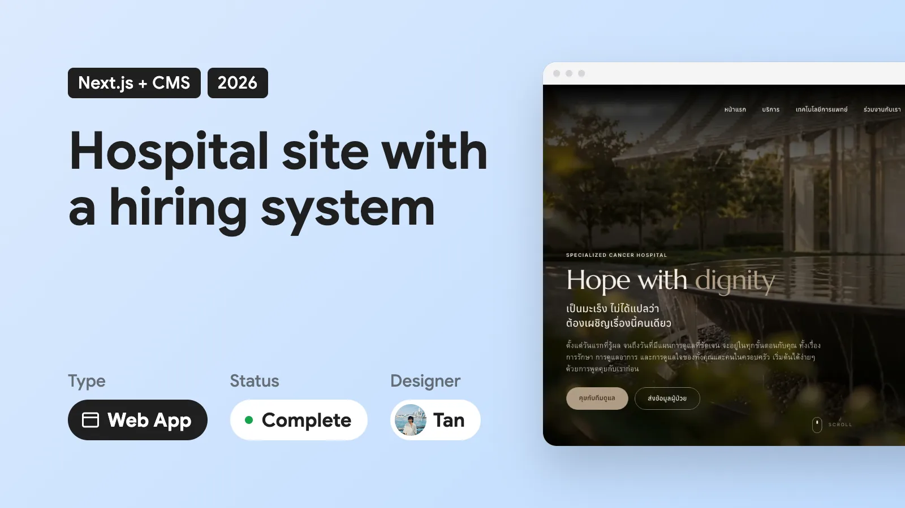
A bilingual full-stack website for a specialty hospital still under construction. It tells the pre-opening story calmly and with dignity, and includes a built-in applicant tracking system (ATS) that takes applications, stores them in the CMS, then generates a PDF of each Thai application and emails it to HR automatically
The problem
A website for a hospital that "isn't open yet": it has to build trust without overpromising, and it has to start hiring staff before opening day
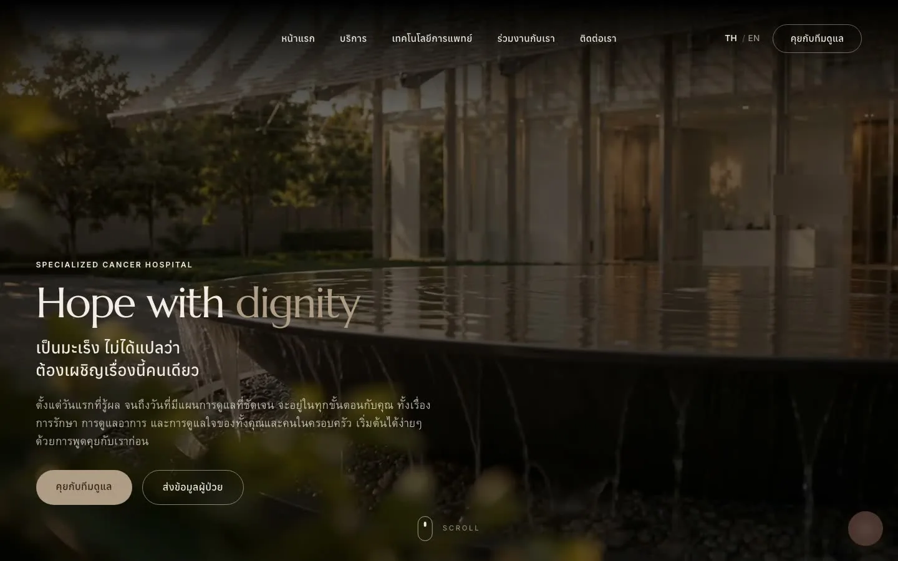
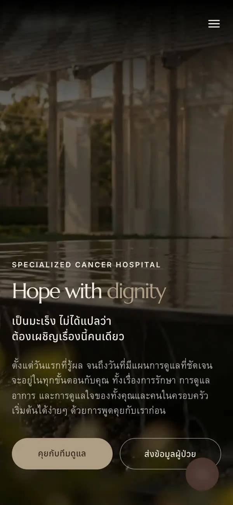
A specialty cancer hospital is still under construction. The website must not act as if the hospital is already fully open, yet it has to say "this will be a place that understands you" in a way that feels warm and credible. At the same time it has to start recruiting doctors, nurses and staff before opening. All of this had to ship fast on a limited pre-opening budget, while keeping sensitive applicant data safe
The hospital isn't open yet, which is hard to communicate
Acting as if it were open would cost credibility, but showing only "under construction" feels cold. The site had to be honest that it is still being built while letting people feel that real help is coming
Hiring had to start before opening, with no system in place
The hospital needed doctors, nurses and pharmacists before opening. Without a system, applications end up scattered across email and chat, with no central store and no standard format for HR to read
Applicant data is sensitive (PII)
Applications contain ID numbers, phone numbers, professional license numbers and emergency contacts. Storing them in the wrong place or leaking them through a public API is a risk both under PDPA and for trust
Two audiences and a distinct brand
The site serves both Thai visitors and an international audience (doctors and partners), under strict brand rules: a loopless Thai typeface to match the logo, and no red crosses or battle language about cancer
Fast to deploy, on a limited pre-opening budget
There was no budget for a separate backend, and no CMS or email keys at the start, yet the site had to go live in time to start publicity and open applications. It also couldn't be tied to so many vendors that it became hard to change
The solution
An honest pre-opening site with a built-in ATS, fully serverless, so the CMS and email can be connected later without breaking the site
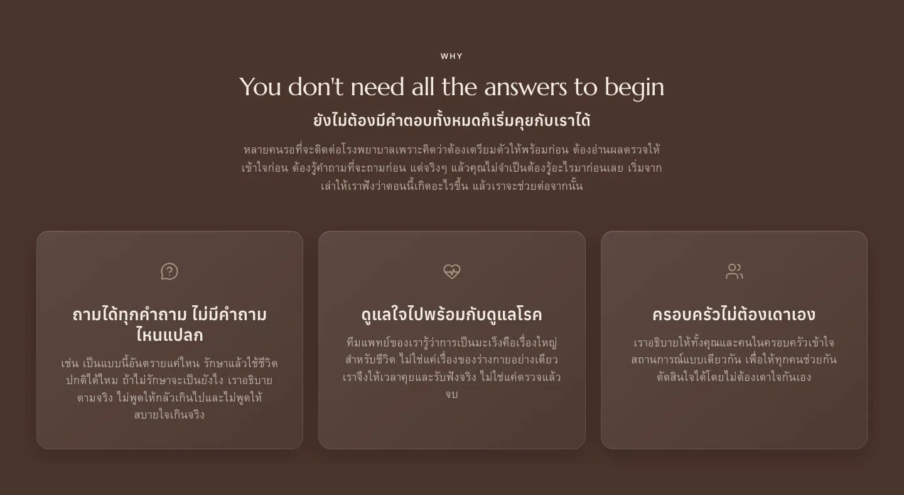
A pre-opening site that tells the truth warmly
A light, water and shade mood, "breathing" motion (slow fades and reveals) and low-pressure CTAs ("Talk to our care team" / "Get advice"). It builds trust without pretending the hospital is already open
Careers and ATS inside the same site
Job listings, a multi-section application form and automatic storage in the CMS. HR reviews everything in one place in Studio instead of collecting it from email and chat
Applications stored as "drafts" so PII can't leak
Documents are saved as drafts (drafts.<uuid>), which the public API can't read but HR can see in Studio. The write token is server-only, and only the necessary fields are stored
Thai application PDFs for HR, generated automatically
When someone applies, the system renders the application cover page (with correct Thai text) in headless Chrome, merges it with the résumé into a single PDF and attaches it to an email to HR, ready to read
Fully serverless, with a fallback at every step
Next.js + Sanity + Resend (called with fetch, no extra dependency). Without a CMS connection it uses seed data; without email set up it returns a stubbed success. The site worked from the first deploy
How it works: 4 steps (the path of an application)
From the moment an applicant hits submit until the PDF reaches HR

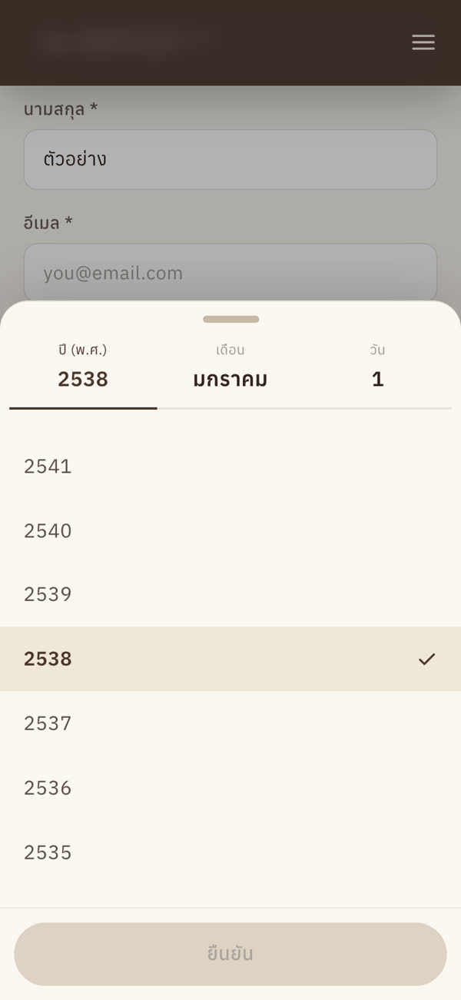
Applicant fills in the form
Multi-section form, bottom sheets on mobile, built-in date wheel and photo cropping
Validate and save a draft
Checked on the server, then saved as a draft in the CMS that the public can't read
Build the PDF in the background
Headless Chrome renders the cover page and merges the résumé (without making the applicant wait)
Notify HR with the PDF
Sends an email with the PDF attached and a link to open it in Studio
Tech Stack & Architecture
Fully serverless: no separate backend, no self-managed database, and services can be connected later without breaking the site

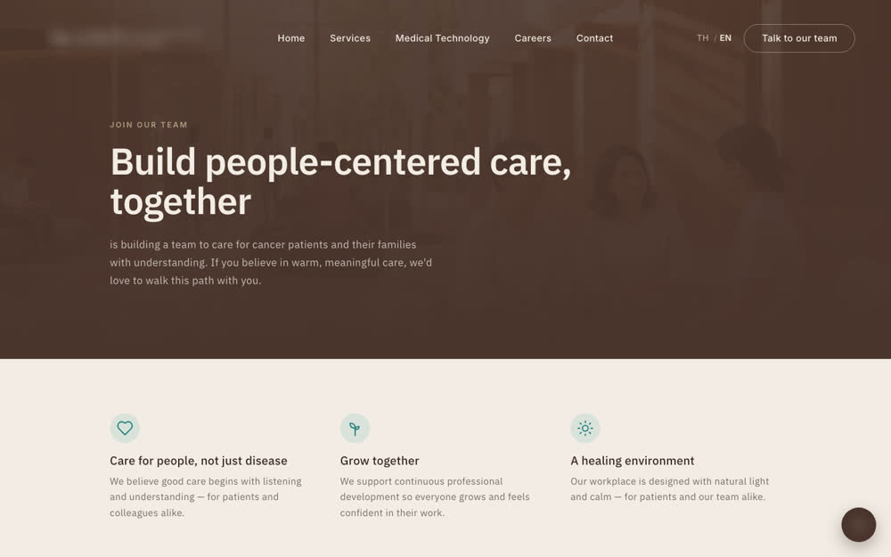
Next.js 16 + RSC — renders bilingual content on the server quickly with good SEO, and route handlers act as the API in the same app, so no separate backend · Sanity CMS — lets HR edit job posts and read applications in a Thai-language Studio without a developer touching code · next-intl — keeps the "text" (dictionary) separate from the "page structure" (code), so adding or editing a language doesn't affect layout · Puppeteer + pdf-lib — renders the Thai cover page in a real browser, then merges the résumé, producing a PDF with correct Thai text · Resend via fetch — sends email without adding a dependency · every service has a fallback, so the site could deploy before all the keys existed
What I built: 8 core features
From the brand-facing pages to the back-office hiring system
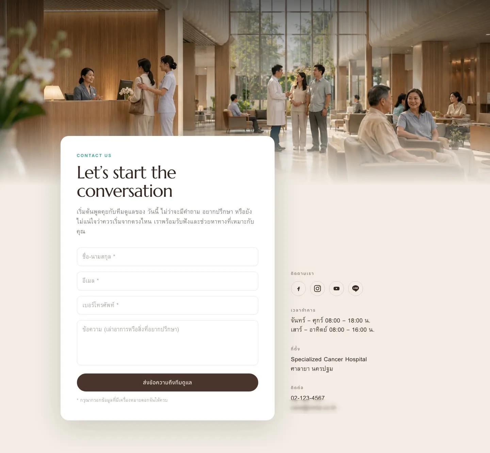
Bilingual i18n (TH / EN)
next-intl + App Router, URL prefix /th · /en, Thai as the default. Text lives in dictionaries, separate from layout
Pre-opening Homepage
Video hero with slow reveals, and story sections (who/why/healing/services/process/FAQ) in a calm, dignified tone
Careers Listing
Job listings with demand badges (urgent/high), pulled from the CMS when connected and from seed data otherwise
Multi-section Application Form
A multi-section form with 30+ fields: bottom sheets on mobile, a date wheel for birth dates, in-browser photo cropping and nationality search
Sanity CMS (Thai Studio)
8 content models (jobs, categories, departments, locations, applications, contact messages, etc.), document-level i18n, custom inputs and an export-PDF button
Auto PDF Generation
Renders the application cover page in headless Chrome (correct Thai), merges the résumé (PDF or image) into one file with pdf-lib, and stamps the footer and page numbers
Email Notify
Alerts HR to every application and contact message via Resend (REST called with fetch), with the PDF attached and a branded header
Contact Form + Chat Widget
A contact form (saved as a draft, with an email alert) and a floating "Talk to our care team" button linked to the hospital's chat channel
What it looks like: Careers
The job listings applicants see: position cards with demand badges; applying opens the multi-section form
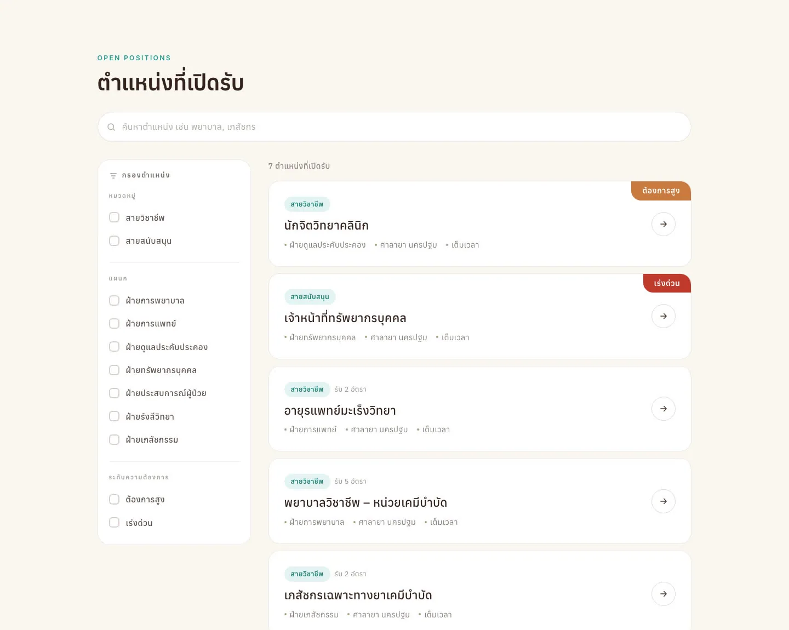
UI design & design system
From a product designer's side: turning "a cancer hospital before it opens" into a design system that is calm and dignified, and that actually handles a 30+ field bilingual application form
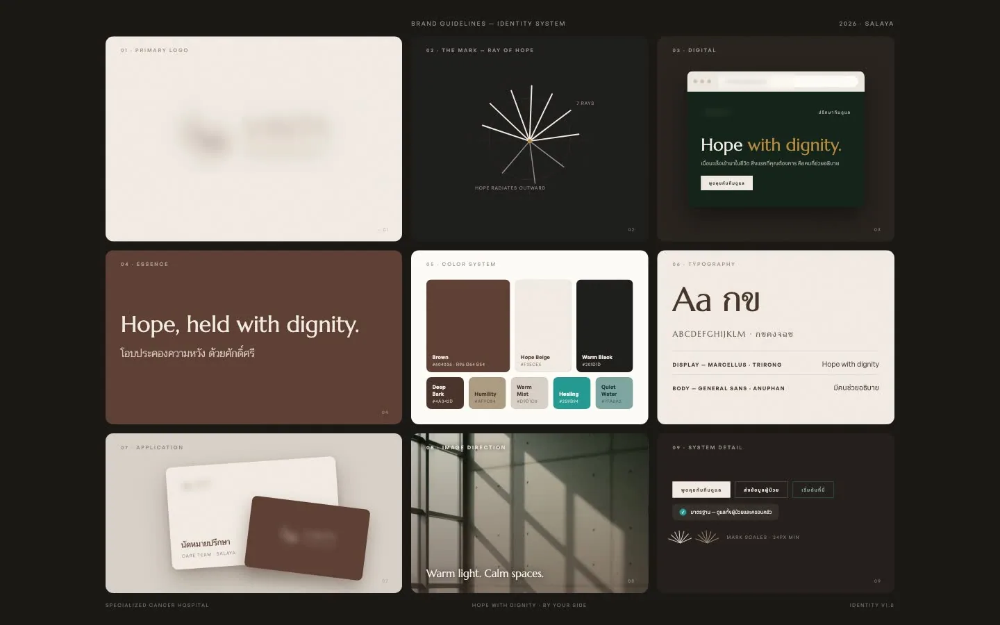
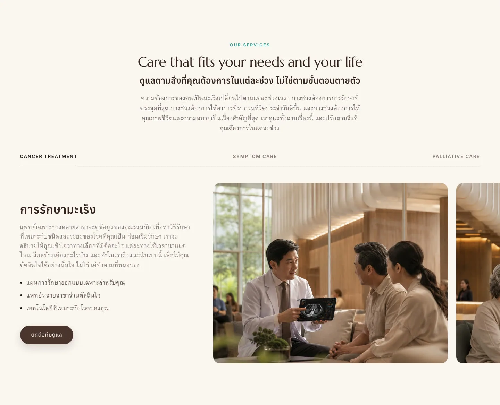
On mobile, a long form means people quit halfway, so it is split into a section stepper, with bottom sheets for choices, a date wheel for birth dates (Buddhist era) and in-browser photo cropping. Applicants see one section at a time instead of a wall of fields. At ≥768 it expands to popovers and two columns
Every field has the full set of states: default / focus (gold ring #AF9C84) / invalid (red #b4452f). Using :not(:placeholder-shown):invalid, errors appear only after the user fills in a field and leaves it, not the moment they start typing. That makes it feel less like being scolded, and each error explains the fix in Thai
A deliberate choice of no red crosses and no battle language. Healing Green is a quiet accent, not a warning color; contrast passes AA on the beige background; touch targets are ≥44px; :focus-visible uses a green outline; and the "breathing" motion respects prefers-reduced-motion
Thai uses two typefaces with different jobs: Anuphan (loopless, matching the logo) for headings and display, and Garuda (looped) for body text that's easy to read at length. English pairs them with Marcellus (serif) · line-height 1.28 leaves room for Thai vowels and tone marks · text is kept separate from layout so the two languages stay in sync
Hacks and fixes
6 problems I had to solve myself: Thai text in PDFs, a browser on serverless, and PII safety
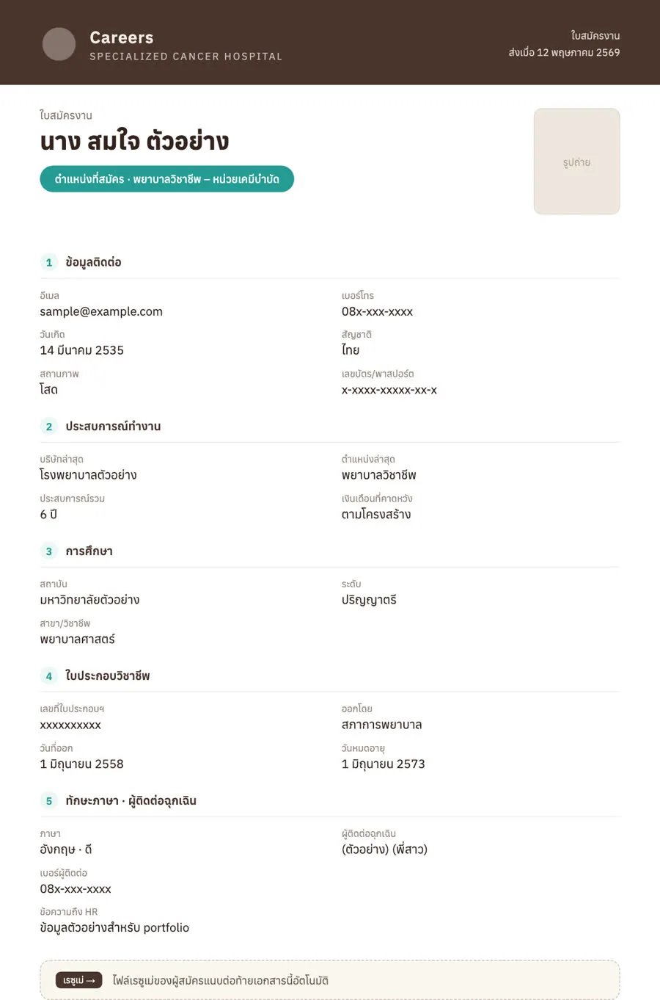
Thai PDFs with correct characters
pdf-lib's standard fonts can't draw Thai (vowels and tone marks break), but HR needs Thai applications that are 100% correct
pdf-lib · the footer stamped on every page is captured as a screenshot image and embedded, so Thai glyphs don't break during stampingYou can't just launch a browser on serverless
Puppeteer needs a Chrome binary. The dev machine already has Chrome, but serverless doesn't, and full Chrome is over the size limit
VERCEL / AWS_REGION). On serverless, load @sparticuz/chromium (a binary trimmed small enough); on the dev machine, point to the installed Chrome. The same code runs in both environmentsApplications contain PII and must not reach the public API
Published Sanity documents can be read through the public API. Stored the normal way, anyone could query applicants' ID and phone numbers
_id = drafts.<uuid>), which the public API can't see but HR can in Studio · the write token is server-only (no NEXT_PUBLIC_ prefix) · every field is validated on the server before savingGenerating the PDF and sending email is slow, so applicants wait
If the response waits for the PDF render and the email, applicants stare at a spinner for several seconds, which is a bad experience
after() to tell the applicant "success" right away once the data is saved, then generate the PDF and email HR as a background task (with maxDuration = 60 for heavy jobs). The applicant doesn't waitThe site had to go live before all the keys existed
At the start there was no Sanity project, Resend key or write token, but the site had to be published in time for publicity
Keeping icons and images separate from bilingual text
Homepage sections mix icons, images and text. Keeping all of it in the dictionary makes translations hard to edit and the layout easy to break
Deliberate design decisions
For a cancer hospital website, what you deliberately "don't do" matters as much as what you do
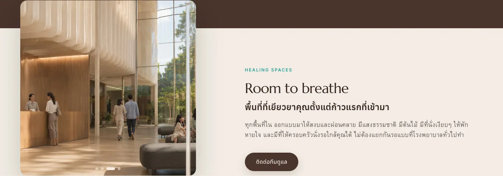
This site has to reduce fear, not add to it. So it uses no red crosses, no battle language about cancer, doesn't act as if the hospital is fully open while it's still under construction, and never stores applicant data where the public can reach it. Every decision puts calm, dignity and data safety ahead of marketing tricks
Tell the truth, don't oversell
Say "under construction" warmly, without pretending to be open
No red crosses or battle language
Credibility comes from typography & layout, not urgent symbols
PII stored only as drafts
Not readable by the public API · token stays on the server
Breathing motion
Slow, soft reveals that respect reduced-motion, nothing flashy
Knowledge domains I got stronger in
5 areas where this project genuinely moved my level up
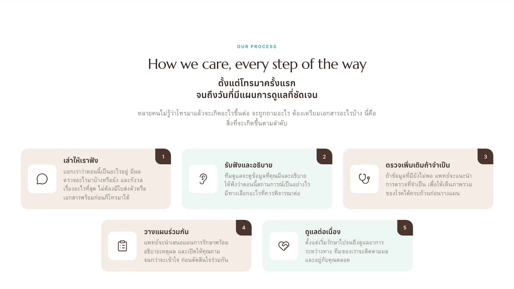
Learned next-intl on the App Router: routing/URL prefixes, setRequestLocale in RSC, separating "text" (dictionary) from "page structure" (code) and mapping icons and images by index. Lesson: good i18n lets translators edit only the text, without touching layout and without the two languages drifting apart
Built the pipeline: puppeteer renders HTML→PDF (with correct Thai fonts) + pdf-lib merges multiple files + embeds images and stamps footers and page numbers + handles two environments (local Chrome vs @sparticuz/chromium on serverless). Lesson: producing send-ready documents isn't magic once you know each tool's strengths and chain them together
8 content types in Sanity (jobs, categories, departments, locations, applications, messages, etc.), draft vs published separation, document-level i18n, custom Studio inputs and an export button. Lesson: good back-office work hands over "a system HR can run on its own", not screens that need a developer every time the copy changes
Set the system up to keep PII safe: stored as drafts the public API can't read, server-only tokens kept away from the client, every input validated on the server, and after() for heavy background work without slowing the user. Lesson: with sensitive data, "where it's stored" and "who can read it" have to be designed in from the start, not patched on later
Turned a mood & tone (light, water, shade, dignity) into real UI: copy that reassures rather than pressures, no urgent symbols, contrast that passes on beige and brown, and breathing motion that respects reduced-motion. Lesson: for patients and families, "calm and clarity" is a feature, not decoration